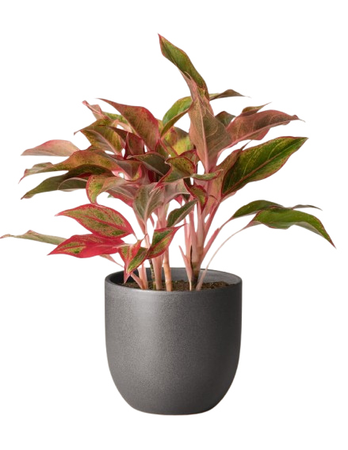

Trees Plants to Grow inYour Living Room

Tree Planting is the process Of transplanting tree seedlings, generally for
forestry,land reclamation.It differs from the transplantion of larger trees in abroriculture
Learn More
200+
Plant Species
1.2k+
Member Joined